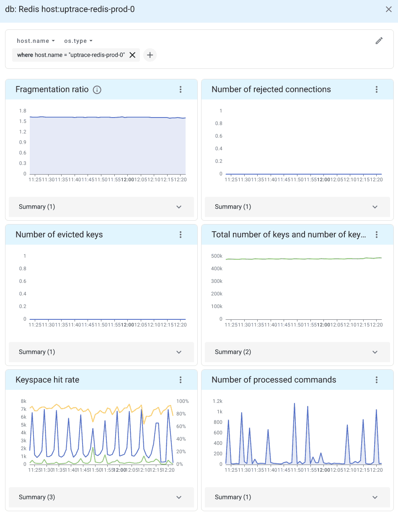

集成 OpenTelemetry(Integrating)¶
什么是 OpenTelemetry？¶
OpenTelemetry 是一个开源的可观测性框架，用于跟踪 (traces)、度量 (metrics) 和日志 (logs)。它是由 OpenCensus 和 OpenTracing 项目合并而成，并由云原生计算基金会 (Cloud Native Computing Foundation) 托管。
OpenTelemetry 允许开发者以与供应商无关的方式收集和导出遥测数据。通过 OpenTelemetry，您可以对应用进行一次性监测，并在不更改监测代码的情况下添加或更换供应商。例如，这里有一个支持 OpenTelemetry 的 热门 DataDog 竞争对手 列表。
什么是追踪 (Tracing)？¶
OpenTelemetry 追踪 允许您查看请求是如何通过不同的服务和系统进行的、每个操作的时间，以及日志和错误在发生时的情况。
在分布式环境中，追踪还可以帮助您理解微服务之间的关系和交互。分布式追踪提供了对特定微服务的性能以及该服务对其他微服务的影响的深入了解。
通过使用追踪，您可以将请求分解为多个 span。Span 是您的应用在处理请求时执行的一个操作单元，例如数据库查询或网络调用。
Trace 是一个由多个 span 组成的树状结构，展示了请求在应用程序中的路径。根 span 是追踪中的第一个 span。

要了解更多有关追踪的信息，请参见 使用 OpenTelemetry 进行分布式追踪 。
OpenTelemetry 的监测工具 (Instrumentation)¶
监测工具是为流行的框架和库提供的插件，这些插件使用 OpenTelemetry API 记录重要操作，例如 HTTP 请求、数据库查询、日志、错误等。
要为 redis-py 安装 OpenTelemetry 的 监测工具 ：
pip install opentelemetry-instrumentation-redis
安装完成后，您可以这样监测代码：
from opentelemetry.instrumentation.redis import RedisInstrumentor
RedisInstrumentor().instrument()
一旦代码被修补，您可以像平常一样使用 redis-py：
# 同步客户端
client = redis.Redis()
client.get("my-key")
# 异步客户端
client = redis.asyncio.Redis()
await client.get("my-key")
OpenTelemetry API¶
OpenTelemetry API 是一个编程接口，您可以使用它对代码进行监测并收集遥测数据，如追踪、度量和日志。
您可以使用 OpenTelemetry API 来衡量重要操作：
from opentelemetry import trace
tracer = trace.get_tracer("app_or_package_name", "1.0.0")
# 创建一个名为 "operation-name" 的 span，类型为 "client"。
with tracer.start_as_current_span("operation-name", kind=trace.SpanKind.CLIENT) as span:
do_some_work()
使用属性记录上下文信息：
if span.is_recording():
span.set_attribute("http.method", "GET")
span.set_attribute("http.route", "/projects/:id")
并监控异常：
except ValueError as exc:
# 记录异常并更新 span 状态。
span.record_exception(exc)
span.set_status(trace.Status(trace.StatusCode.ERROR, str(exc)))
有关详细信息，请参阅 OpenTelemetry Python Tracing API。
Uptrace¶
Uptrace 是一个支持分布式追踪、度量和日志的 开源 APM 。您可以使用它来监控应用程序并设置自动警报，通过电子邮件、Slack、Telegram 等接收通知。
您可以使用 Uptrace 监控 redis-py，参照此 GitHub 示例 作为起点。
您可以通过下载 DEB/RPM 包或预编译的二进制文件来 安装 Uptrace 。
监控 Redis 服务器性能¶
除了监控 redis-py 客户端，您还可以使用 OpenTelemetry Collector Agent 监控 Redis 服务器性能。
OpenTelemetry Collector 是应用程序与 `分布式追踪工具 <https://uptrace.dev/blog/distributed-tracing-tools.html>`_（如 Uptrace 或 Jaeger）之间的代理。Collector 接收遥测数据，进行处理，然后将数据导出到 APM 工具中进行永久存储。
例如，您可以使用 Otel Collector 提供的 OpenTelemetry Redis 接收器 来监控 Redis 性能：
有关详细信息，请参阅 OpenTelemetry Collector 入门 。
警报和通知(Alerting and notifications)¶
Uptrace 还允许您使用警报规则监控 OpenTelemetry 指标 。例如，以下监控使用按节点分组的表达式来创建警报，当单个 Redis 分片出现故障时触发：
monitors:
- name: Redis shard is down
metrics:
- redis_up as $redis_up
query:
- group by cluster # 监控每个集群,
- group by bdb # 每个数据库,
- group by node # 和每个分片
- $redis_up
min_allowed_value: 1
# 分片应当持续 5 分钟不可用后才会触发警报
for_duration: 5m
您还可以创建更复杂的表达式查询。例如，以下规则在 keyspace 命中率低于 75% 时创建警报：
monitors:
- name: Redis read hit rate < 75%
metrics:
- redis_keyspace_read_hits as $hits
- redis_keyspace_read_misses as $misses
query:
- group by cluster
- group by bdb
- group by node
- $hits / ($hits + $misses) as hit_rate
min_allowed_value: 0.75
for_duration: 5m
详细信息请参阅 警报和通知。
接下来是什么？(What's next?)¶
接下来，您可以学习如何配置 uptrace-python 以将 spans、metrics 和 logs 导出到 Uptrace。
您可能还对以下指南感兴趣：